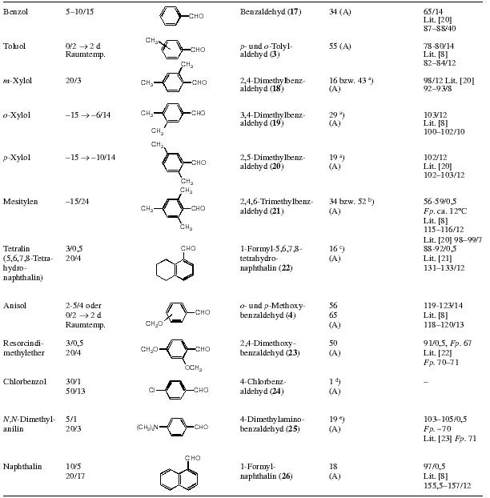
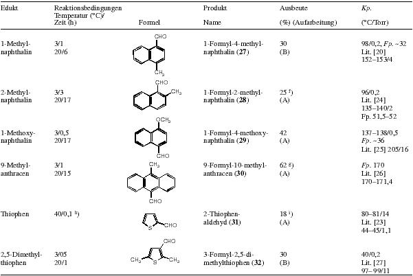
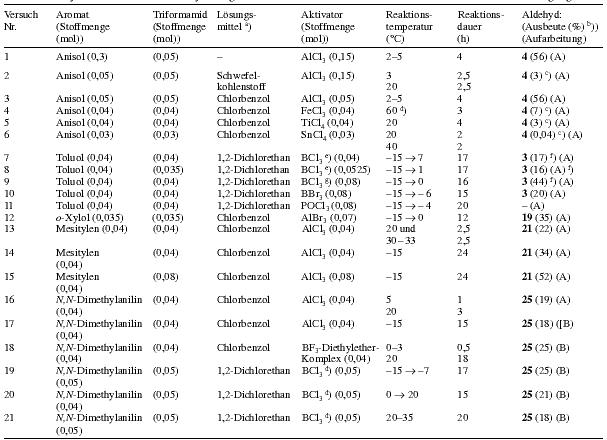
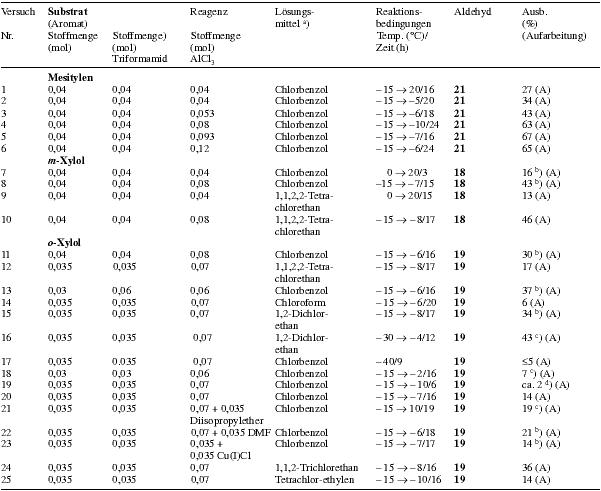
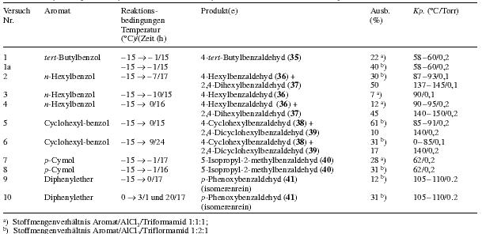

Aromatic Formylation Using TriformamideTranslation from German by Hypo, HTML by Carboxyl[ Back to the Chemistry Archive ] This wonderful reference (J. Prakt. Chem. 2000, 342, No. 3.) was found by foxy2. If you want to know what I mean, scroll down to the tables and imagine what (alpha-methyl)phenethylamines those benzaldehydes would give. I only translated the experimental part. I didn't know the english for "Spaltrohrkolonne" (a type of fractionating column) so I translated it by slit pipe column... A followup to this article can be found here Abstract Diformamide (1) reacts with activated aromatic compounds like toluene, anisole, m-xylene, 1,2-dimethoxybenzene in the presence of AlCl3 to give N-(diarylmethyl)-formamides 2a - d, the corresponding aromatic aldehydes 3 - 6 are formed as by-products in low yields. From N,N-dimethylaniline and 1/AlCl3 the triphenylmethane derivative 7 can be obtained. The reaction of anisole with N-methyl-diformamide (9) affords the formamide 10. The mixture of formamide, P4O10 and AlCl3 reveals to be a reagent which is capable to formylate toluene and anisole, resp. Triformamide (14)/AlCl3 is an effective formylating system which allows the preparation of aromatic aldehydes (e.g. 3,4,17 - 32) from the corresponding aromatic hydrocarbons. Aluminiumchloride can be replaced by borontrichloride. The yields of the formylation reactions depend strongly from the reaction conditions (molar ratio: aromatic hydrocarbon/AlCl3/14; solvent, reaction temperature). The scope of the reaction covers nearly complete those of the Gattermann-Koch-, Gattermann- and Vilsmeier - Haack-reaction. Attempt at the Formylation of Anisole with 1 and Catalytical Amounts of Ytterbium- tris(trifluoromethanesulfonate)1.08 g (10 mmol) Anisole, 0.73 g (10 mmol) 1 and 1.24 g (2 mmol) Yb(CF3SO3)3 in 10 ml nitromethane are refluxed for 24 h. After cooling, 20 ml water is added and the reaction stirred for 10 min at room temperature. The organic phase was separated and the aqueous phase extracted three times with 20 ml chloroform. The combined organic phases are dried over sodium sulfate. After removing the solvent on the rotavapor, the residue was analysed with GC. Only anisole could be detected. Formylation of Activated Aromatics with Formamide/P4O10/AlCl3 (general procedure)To the aromatic compound, when necessary in a solvent, is added the given amount of P4O10. Under stirring and cooling in an ice bath first the aluminium chloride, then the formamide are added. Then the mixture is heated to the given temperature and stirred. After cooling the reaction is hydrolysed with ice and extracted three times with 30 ml chloroform. The organic phase is washed with sodium bicarbonate solution and water to make it neutral and dried over sodium sulfate. The chloroform is removed on the rotavapor and the residue fractionated under aspirator vacuum. Toluene, P4O10, AlCl3 and formamide are reacted with a 0.5:0.1:0.2:0.1 molar ratio for 3 h, yield: 9% 3. The reaction of anisole, P4O10, AlCl3 and formamide with a molar ratio of 0.4:0.1:0.2:0.1 (18h, 28 °C) gives 12% 4. The same reaction with a molar ratio of 0.5:0.1:0.2:0.1 (2.5 h, 75 °C) in nitromethane gives 4 with a yield of 15%. The same reaction in chlorobenzene with a molar ratio of 0.18:0.6:0.18:0.18 (4h, 60 °C) gives 4 with 4% yield. N,N-Dimethylaniline, P4O10, AlCl3, Formamide are reacted with a molar ratio of 0.1:0.1:0.2:0.1 for 23 h at 20 °C. There is no conversion. Formylation of Toluene with Aluminium Chloride and Triformamide in TolueneTo 46.0g (500 mmol) toluene is added 20.0g (150 mmol) AlCl3 under cooling in an ice bath. Then 5.1g triformamide (50 mmol) is added. The reaction is stirred for 5 h at 0 °C. The mixture is hydrolysed with ice, neutralised with 5M NaOH and steam distilled. The organic phase of the distillate is separated, the aqueous phase extracted twice with diethylether. The combined organic phases are dried over sodium sulfate. The solvent is removed on the rotavapor and the residue distilled at aspirator vacuum. One obtains 4.74 g tolylaldehyde (79%) with bp 80 °C / 12 Torr (Lit 8 bp. 82-84 °C / 12 Torr). The residue of the steam distillation is extracted three times with diethylether. The combined organic phases are dried over sodium sulfate, the solvent removed on the rotavapor and the residue distilled at the oil pump. One obtains 11.1 g (93%) 2a with a bp of 165 °C/0.001 Torr. Formylation of Aromatic Compounds with Triformamide/AlCl3 (cf tables 2-4) (General Procedure)To a 2 M solution of the aromatic compound in the given solvent is added the corresponding amount of lewis acid. Under stirring at the given temperature triformamide is added, when necessary the mixture is stirred for some time, the cooling bath is removed and the reaction stirred for the given amount of time at room temperature. In order to release the aldehyde, ice water (about 200 ml, if 40 mmol of the aromatic compound are formylated) is added under agitation and the mixture heated for 20 min to 50 °C. Method A:The hydrolysed reaction is steam distilled (Note 6). The organic phase of the distillate is separated and the aqueous phase extracted three times with the given solvent (when alkylating 40 mmol, about 15 ml). After drying of the combined organic phases, the solvent is distilled off using a 30 cm vigreux column. The aldehyde is obtained by fractionating the residue through a 15 or 30 cm vigreux column. Method B:The organic phase of the hydrolyzed reaction is separated. The aqueous phase is extracted four times with the given solvent (when alkylating 40 mmol, about 20 ml). The combined organic phases are dried over sodium sulfate and the solvent removed by distilling through a 30 cm vigreux column. The aldehyde is obtained by vacuum distillation of the residue (Note 7). Very high boiling compounds which crystallize, are vacuum filtered and re-crystallized. Table 2: 40 mmol of the aromatic compound are reacted with 40 mmol aluminium chloride and 40 mmol 14 in 20-25 ml dry chlorobenzene. Deviating from the general procedure, the following compounds were synthesized:10-Methylantracene-9-carboxyaldehyde(30) Method A: The aldehyde crystallising from the residue of the steam distillation is vacuum filtered off and recrystallised from Water/IPA/THF 3:5:3. By evaporation of the mother liquor more product can be obtained. 10-Formyl-phenothiazinMethod B: Reaction in chlorobenzene (3 C/0.5 h and 20 C/ 1.5 h). The extraction of the water is done with DCM. The formyl compound is isolated by distillation, then recrystallized first from ethanol, then from PE/EA (10:1). mp 145°C, Lit 28 mp 145°C.
Table 3 and 4: Size of reaction, amount of solvent and reaction conditions are given in the table Further exploration of the formylation agent triformamide/AlCl3 (cf table 5) 4-tert-Butylbenzaldehyde (35) (Trials nr. 1, 1a, table 5): Using 13.4 g (100 mmol) tert-butylbenzene, 13.4 g (100 mmol) aluminium chloride and 10.1 g (100 mmol) triformamide, one obtains after 15 h of reaction (reaction temp. -15 °C ---> -1 °C) and the workup given for the formylation of for o-xylol 3.4g (22%) tert-butylbenzaldehyde with bp. 58-60 °C/0.2 torr, Lit 29 bp 128-129 °C. The same reaction yields 6.5g (40%) 35, when twice the amount of aluminium chloride (26.8 g (200 mmol)) is used. 4-Hexylbenzaldehyde (36) and 2,4-dihexylbenzaldehyde (37) (Trials nr. 2-4, table 5): To 6.49 g (40 mmol) n-hexylbenzene in 20 ml 1,2-dichloroethane cooled to -15 °C is added aluminium chloride (amount given in table 5). The mixture is stirred for some minutes and then 4.0 g (40 mmol) triformamide is added. In trial nr. 3 the triformamide was added directly after the aluminium chloride. The reaction is stirred for 15-17h under moisture protection, letting the temperature slowly climb to the value given in table 5. Ice water is added carefully, after completed hydrolysis, the organic phase is separated and the aqueous phase extracted three times with 15 ml 1,2-dichloroethane. The combined organic phases are dried over sodium sulfate and the 1,2-dichloroethane is distilled off under atmospheric pressure. The aldehydes are obtained by fractionating through a 30 cm slit pipe column: 4-hexylbenzaldehyde (36) bp 87-93 °C/0.1 torr, lit 30 bp 70 °C/2x10-5 torr and 2,4-dihexylbenzaldehyde (37), bp 140-145 °C/0.1 torr nD/20=1.5038. C19H30O Calculated: C 83.15 H 11.02 (274.45) Found: C 82.88 H 11.07 4-Cyclohexylbenzaldehyde (38) and 2,4-dicyclohexylbenzaldehyde (39)(Trial nr. 5, table 5): Similarly to the previous trial, one obtains from 6.41 g (40 mmol) cyclohexylbenzene in 20 ml 1,2-dichloroethane, 10.7 g (80 mmol) aluminium chloride and 4.0 g (40 mmol) triformamide 4.56 g (61%) 38 with bp 85-119 °C/0.2 torr, lit 31 bp 160 °C/12 torr and 1.14 g (10%) 39 with bp 140 °C/0.2 torr. C19H26O Calculated: C 84.39 H 9.69 (270.41) Found: C 84.64 H 9.71 4-Cyclohexylbenzaldehyde and 2,4-dicyclohexylbenzaldehyde (bigger preparation)(Trial nr. 6, table 5): To 80.1 g (500 mmol) cyclohexylbenzene in 250 ml dry 1,2-dichloroethane cooled to -15 °C are added under stirring 133.4 g (1000 mmol) AlCl3 during 3 min. During the addition, the temperature of the mixture increases for some degrees centigrade. The mixture is cooled to -15 °C, stirred for 8 min and 50.5g (500 mmol) triformamide is added. The reaction is stirred for 24h under moisture protection, while the temperature is slowly (!) allowed to climb to 9 °C. Then the yellow-brown, viscous and nearly homogeneous mixture is poured slowly into 2.5 l ice with stirring. The reaction is stirred for some minutes, the organic phase separated and the aqueous phase extracted three times with 90 ml 1,2-dichloroethane. The combined organic phases are dried over anhydrous sodium sulfate and the solvent removed by distillation under atmospheric pressure (final temperature of the oil bath: about 200 °C). The residue, a tenacious yellow-brown oil, is fractionated at the oil pump through a silver plated 40 cm vigreux column. After a little forerun (cyclohexylbenzene) one obtains a first fraction of 31.1g (31%) 38 with bp of 80-85 °C/0.1 torr. The second fraction with a bp of about 137- 145 °C/0.1 torr, consists mainly of 2,4-dicyclohexylbenzaldehyde. By further fractionating through a split pipe column, one obtains 11.7g (17%) 39 as colourless, viscous oil with bp about 137 °C/0.1 torr. 5-Isopropyl-2-methylbenzaldehyde(Trials nr. 7, 8, table 5): Using 13.4 g (100 mmol) p-cymene, 26.8 g (200 mmol) aluminium chloride and 10.1 g (100 mmol) triformamide in 50 ml 1,2-dichloroethane, one obtains after 16 h of reaction (reaction temperature -15 °C --> -1 °C) and workup as previously described 5.1 g (31%) 5-isopropyl-2-methylbenzaldehyde. In the same way, 5.37 g (40 mmol) p-cymene, 5.35 g (40 mmol) aluminium chloride and 4.04 g (40 mmol) triformamide in 20 ml 1,2-dichloroethane give 1.51 g (28%) 5-isopropyl-2-methylbenzaldehyde with a bp of 51-52 °C/0.2 torr, lit 31 bp 125 °C/20 torr. p-Phenoxybenzaldehyde(Trials nr. 9 and 10, table 5): 10.7g (80 mmol) AlCl3 is added under the conditions given in table 5 to a mixture of 6.81 g (40 mmol) diphenylether and 20 ml 1,2-dichloroethane. Some minutes later 4.0 g (40 mmol) triformamide is added. The reaction is stirred under moisture protection (temperature and reaction time according to table 5). Then water is added carefully. To complete the hydrolysis, one heats about 20 min to 50 °C. After cooling the organic phase is separated and the aqueous phase extracted twice with 20 ml 1,2-dichloroethane. The combined organic phases are dried over sodium sulfate. After evaporation of the 1,2-dichloroethane one obtains a tenacious, nearly colourless oil, the fractionating of which yields p-phenoxy-benzaldehyde (41) with bp 105-110 °C/0.1 torr, Lit 22 bp 158-159 °C/4 torr. Yields see table 5. Notes6) The residue of the steam distillation contains the formamids 2. They can be extracted with hot ethanol. 7) The residue of the distillation contains the formamids 2. They can be extracted with hot ethanol. Table 2Heading: Reactant / Reaction conditions Temperature( °C)/Time(h) / Formula / Product Name / Yield (%)(Workup) / bp ( °C/Torr) Raumtemp. = room temperature  Notes:a) Molar ratio aromatic compound/triformamide/AlCl3 = 1:1:2 Table 3Heading: Trial nr. / Aromatic compound (quantity (mol)) / Triformamide (quantity (mol)) / Solvent / Activator (quantity (mol)) / Reaction temperature ( °C) / Reaction time (h) / Aldehyde (Yield (%)) (Workup) Notes:a) Amount of solvent: 20-30 mlb) The yields are calculated under the assumption that the aromatic compound and triformamide react in a 1:1 molar ratio. c) Yield of aldehyde determined using 1H-NMR spectroscopy d) The lewis acid and the formamide are added at 20 °C and then the temperature is slowly augmented to the given value e) The BCl3 was added as 1M solution in heptane f) p:o ratio about 5:1 g) The BCl3 was added in it's condensed form Table 4Heading: Trial nr. / Substrate (aromatic compound) Quantity (mol) / Quantity of triformamide (mol) / Quantity of AlCl3 (mol) / Solvent / Reaction conditions Temperature( °C)/Time(h) / Aldehyde / Yield (%) (Workup) Notes:a) Amount of solvent: 20-25 mlb) The corresponding N-Diarylmethyl-formamide forms as secondary product c) 14/AlCl3 in chlorobenzene at -15 °C, aromatic compound added drop by drop during 90 min. d) Mixture of AlCl3, aromatic compound and chlorobenzene added to 14 in chlorobenzene in aliquots Table 5Heading: Trial nr. / Aromatic compound / Reaction conditions Temperature( °C)/Time(h) / Product(s) / Yield (%) / bp ( °C/torr) Notes:a) Molar ratio aromatic compound/AlCl3/triformamide 1:1:1b) Molar ratio aromatic compound/AlCl3/triformamide 1:2:1 |